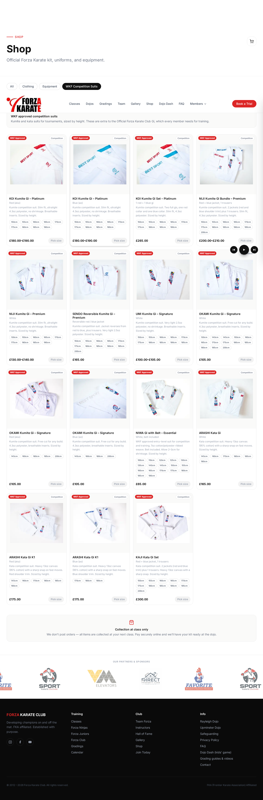
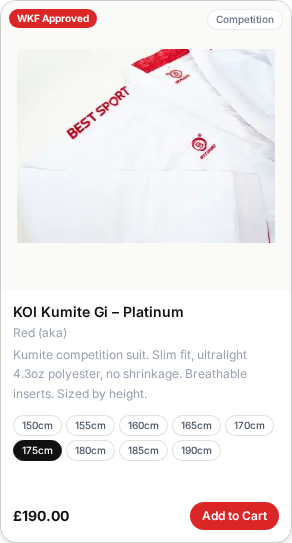
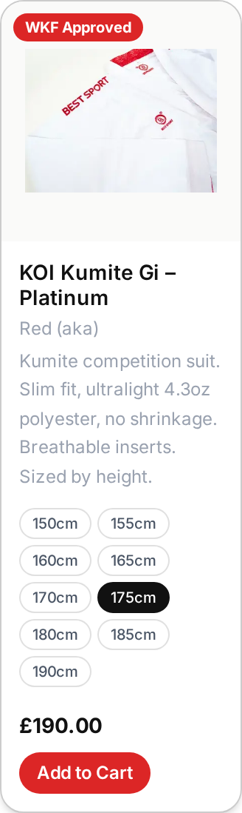
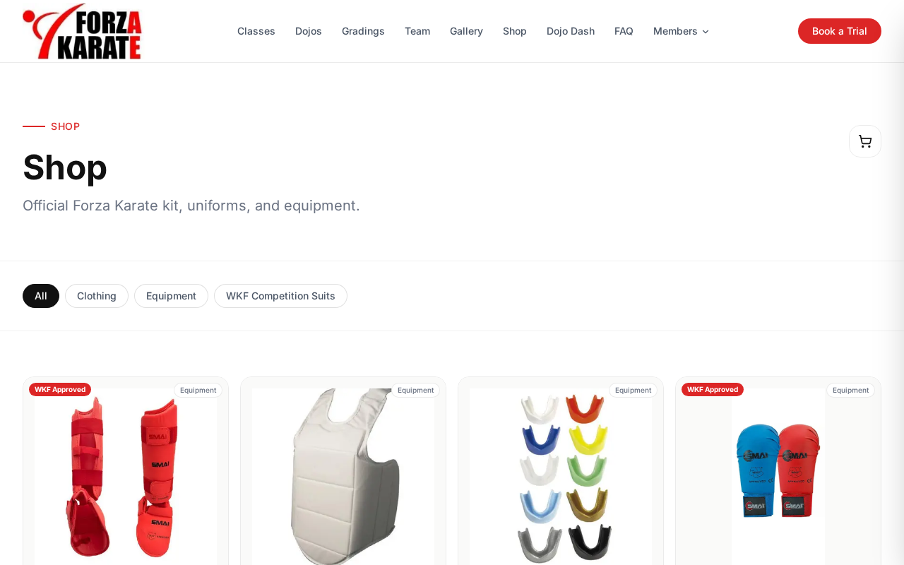

New "WKF Competition Suits" tab. The Official Forza Karate Club Gi (£40) is unchanged.
| Suit | Colour | Type | Price | Sizes |
|---|---|---|---|---|
| KOI Kumite Gi – Platinum | Red collar (Aka) | Kumite | £180–£190 | 150cm–190cm (9 sizes) |
| KOI Kumite Gi – Platinum | Blue collar (Ao) | Kumite | £180–£190 | 150cm–190cm (9 sizes) |
| KOI Kumite Gi Set – Platinum | 1 red + 1 blue gi | Kumite | £265 | 150cm–190cm (9 sizes) |
| NIJI Kumite Gi Bundle – Premium | Red + blue jacket, 1 trousers | Kumite | £200–£210 | 150cm–200cm (11 sizes) |
| NIJI Kumite Gi – Premium | White | Kumite | £130–£140 | 130cm–190cm (9 sizes) |
| SENDO Reversible Kumite Gi – Premium | Reversible red / blue jacket | Kumite | £165 | 150cm–200cm (11 sizes) |
| UMI Kumite Gi – Signature | White | Kumite | £100–£105 | 150cm–195cm (10 sizes) |
| OKAMI Kumite Gi – Signature | White | Kumite | £105 | 130cm–200cm (13 sizes) |
| OKAMI Kumite Gi – Signature | Red (Aka) | Kumite | £105 | 145cm–200cm (5 sizes) |
| OKAMI Kumite Gi – Signature | Blue (Ao) | Kumite | £105 | 145cm–200cm (4 sizes) |
| NIWA Gi with Belt – Essential | White, belt included | Training | £65 | 100cm–190cm (17 sizes) |
| ARASHI Kata Gi | White | Kata | £165 | 145cm–190cm (6 sizes) |
| ARASHI Kata Gi K1 | Red (Aka) | Kata | £175 | 145cm–190cm (6 sizes) |
| ARASHI Kata Gi K1 | Blue (Ao) | Kata | £175 | 170cm–190cm (3 sizes) |
| KAJI Kata Gi Set | Red + blue jacket, 1 trousers | Kata | £300 | 150cm–200cm (11 sizes) |



